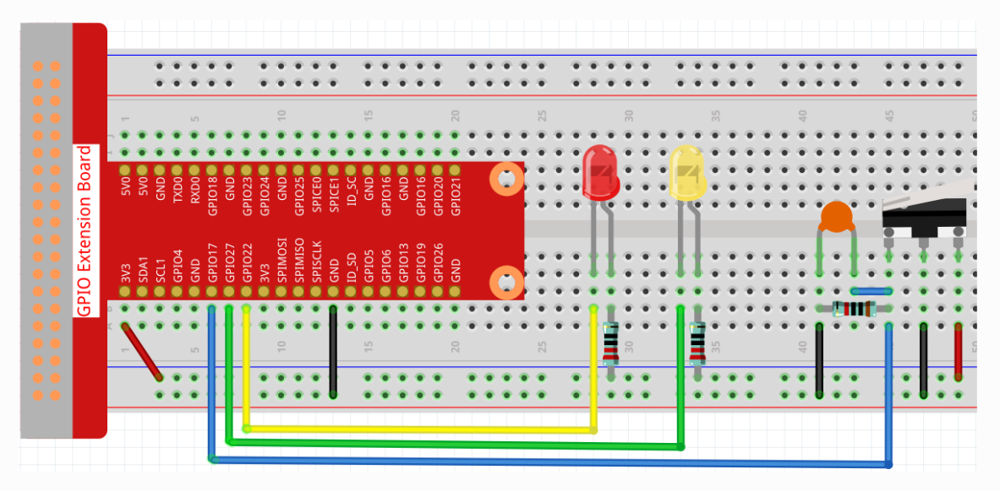
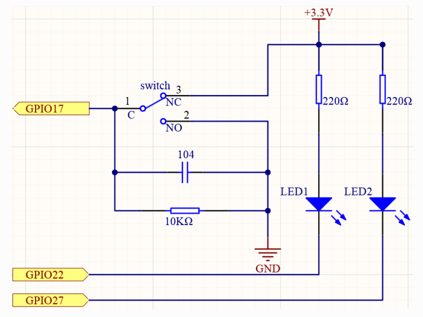

Micro Switch
Overview
This section provides details of a Micro Switch implementation, including its circuit diagram, schematic diagram, required hardware components, assembly instructions, and functionality.
Components
-
1 x Micro switch
-
2 x LEDs of different colors
-
2 x 220Ω resistor
-
1 x 10kΩ resistor
-
1 x 104 Capacitor
-
Breadboard
-
Jumper wires
Assembly Instructions
-
Place the micro switch on the breadboard. Connect the common terminal 'C' to GPIO17.
-
Connect the common terminal 'C' terminal of the micro switch to the ground via a 10KΩ resistor.
-
Place the 0.1 µF capacitor (104) across the switch terminals directly on the breadboard. Connect one side to the GPIO17 where the switch connects and the other side to the ground via the other end of 10KΩ resistor which was connected to micro switch’s 'C' terminal. This capacitor serves as a debouncing element, smoothing out any electrical noise caused by the physical action of the switch.
-
Connect the Normally Open 'NO' terminal of the micro switch to the ground (GND). This resistor acts as a pull-down, ensuring the switch input reads LOW when not pressed.
-
Connect the Normally Closed 'NC' terminal directly to the +3.3V power supply. This means when the switch is not pressed, the GPIO pin will be held HIGH through this connection.
-
Insert the two LEDs onto the breadboard, ensuring the longer leg (anode) is towards the positive supply and the shorter leg (cathode) towards the ground.
-
Connect a 220Ω resistor to the anode of each LED and the other end of these resistors to a positive voltage supply (+3.3V).
-
Connect the cathodes of the LEDs. GPIO22 for LED1 and GPIO27 for LED2.
-
Connect the positive voltage supply (+3.3V) to the positive rail of the breadboard and link the ground (GND) to the negative rail. Ensure all ground connections of the components are tied to this rail.
See the circuit diagram below for more detail.
Circuit Diagram

Schematic Diagram:

Functionality
A Micro Switch is a small, very sensitive switch that requires minimum compression to activate. Because they are reliable and sensitive, micro switches are often used as a safety device. When the micro switch in your circuit is pressed, it breaks the connection between the Common 'C' terminal and the Normally Closed 'NC' terminal, which is linked to +3.3V, and instead makes a connection between the Common terminal and the Normally Open 'NO' terminal, connected to ground through a 10KΩ pull-down resistor. This change pulls the GPIO17 pin to a LOW state. Assuming your microcontroller is programmed accordingly, this action can be used to trigger specific behaviors, such as turning on an LED connected to another GPIO pin. This setup utilizes the micro switch to easily control electronic components through simple physical interaction.
Testing the Circuit
Use the below commands to test the micro switch.
-
/enable- turns on micro switch
$ curl http://localhost:8080/microSwitch/enable
-
/disable- turns off micro switch
$ curl http://localhost:8080/microSwitch/disable
Troubleshooting
-
LEDs do not light up once it has been enabled and the micro switch is pressed:
-
Make sure that the correct GPIO pins are being used for the LEDs and Micro Switch as specified in the yml.
-
Confirm that everything is properly secured to the breadboard and is receiving power.
-
Ensure that the micro switch and all resistors are correctly placed according to the schematic.
-
Look for any unintended short circuits on the breadboard, particularly around the areas where the switch and LEDs are connected.
-
Ensure that the capacitor (0.1 µF) is properly placed across the correct terminals of the micro switch
-
Ensure a 220Ω is being used for the LEDs and 10kΩ resistor for the Micro Switch.
-
YAML Configuration
A BCM numbering system is used. More info can be found here.
The YAML configuration for the LEDs is as follows:
digital-output:
led1:
name: LED Output
address: 22
shutdown: HIGH
initial: HIGH
provider: pigpio-digital-output
led2:
name: LED Output
address: 27
shutdown: HIGH
initial: HIGH
provider: pigpio-digital-outputSo, the output of the LEDs is connected to GPIO 22 and GPIO 27 respectively.
The YAML configuration for the micro switch is as follows:
micro-switch:
name: Micro Switch
address: 17
pull: PULL_DOWN
debounce: 200000
provider: pigpio-digital-inputSo, the input of the micro switch is connected to GPIO 17.
Constructor and Methods
To see the constructor and methods of our MicroSwitchHelper class see our javadoc here for more details.
An Example Controller
This controller uses the micro switch to light up LED2 once it is pressed and LED1 if it is not pressed.
Unresolved directive in microSwitch.adoc - include::../../../../../../components/src/main/java/com/opensourcewithslu/components/controllers/MicroSwitchController.java[tag=ex]